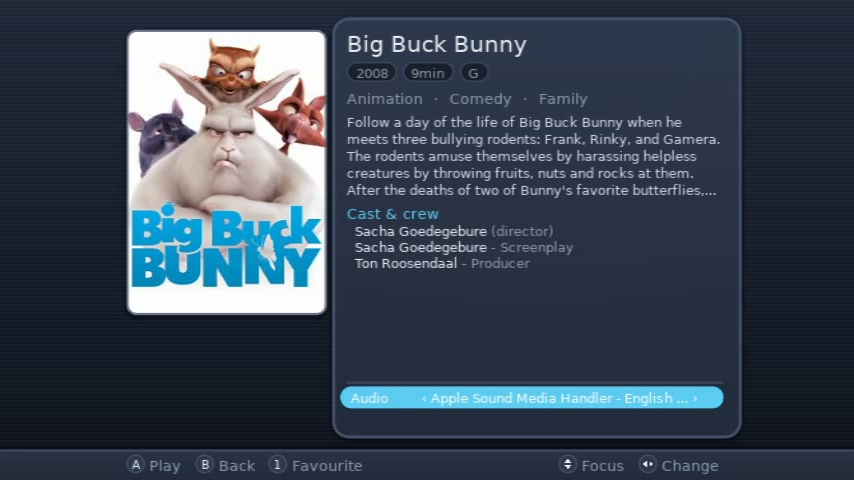
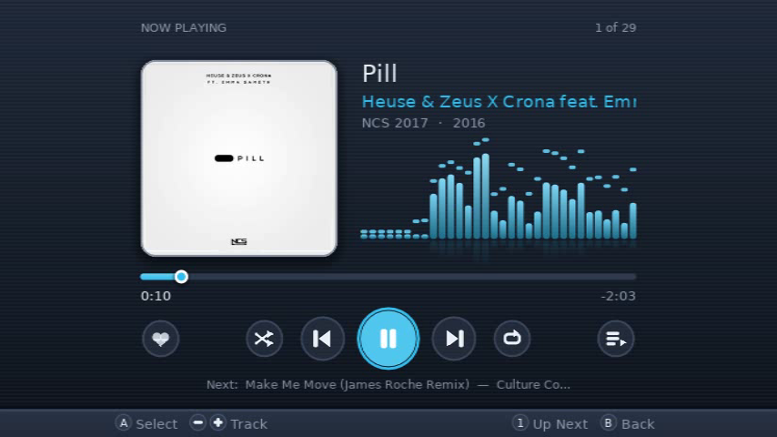

Your Jellyfin films, series and music, on the Wii itself.
Homebrew Channel, Wii Menu channel (Wii and vWii), or Dolphin. Free and open source under the GPLv3.

- Films & Series
- Music
- Photos
- Profiles
- Your Themes
- Play on Wii
- Screensaver
- Local Media
- 640×480 to the TV
- converted by the server at 1.5–5 Mb/s
- direct play: SD Xvid, MPEG-2, H.264 up to 480p
- 10 interface languages
- settings in sd:/apps/WiiFin/
What it does
A Jellyfin client that feels at home on the Wii
Your Jellyfin server converts what the Wii can't play, as it plays. Everything else stays on the console: browsing, the player, the music and your settings.
Films and series
Rows to browse or a grid of libraries. Resume, skip intro and credits, chapters with pictures, and the next episode.
Music
A Now Playing screen with five visualizers and synced lyrics. Your music keeps playing while you browse.
Profiles
Several accounts and servers, each with its own picture, theme and passcode. Your Miis can be profile pictures.
Themes of your own
Change any colour on the Wii and save it as a theme. Theme files are short text files, easy to share.
Any controller
Wii Remote and Nunchuk, Classic Controller, GameCube controller, Wii U GamePad, and a USB mouse or keyboard. You don't need a sensor bar.
Made for real TVs
Fit the picture to a TV that crops its edges, and save a fit for each TV. Solid colours for screens that show banding.
On the TV
Screenshots




Big Buck Bunny © Blender Foundation, peach.blender.org (CC BY 3.0). Pill by Heuse & Zeus X Crona feat. Emma Sameth, NCS.
New in XE
What WiiFin-XE adds
WiiFin-XE is built on WiiFin by fabienmillet. Here's what's new.
- Home and BrowseTwo pages of rows, with header buttons. Expand any row into a full page of up to 100 titles.
- Settings on one screenSections on the left, groups you can fold, and a search that finds any setting.
- Theme editorEleven colours, with a separate colour for the selection ring. Save a theme as a file, or remove it safely.
- Profile picturesYour own pictures, the Miis on your Wii, or the jellyfish. Profiles can have nicknames too.
- ScreensaverA DVD, VHS or CD logo, or your own picture. It really does hit the corners.
- Screen area snapsCommon shapes and margins at a press, and a saved fit for each TV.
- USB mouse and keyboardA mouse moves the pointer. The keyboard works the menus and types into text fields.
- Local MediaOpens WiiMC for the files on your SD card or USB drive. WiiMC-SS XE brings you back.
Install
On your Wii in three steps
You need a Wii with the Homebrew Channel, and a Jellyfin server on your network (10.10 or newer works best).
Copy it to the SD card
Unzip
WiiFin-hbc.zipat the root of the SD card. It goes inapps/WiiFin/.Start it
Open the Homebrew Channel and choose WiiFin-XE. Its icon is the jellyfish.
Sign in
WiiFin-XE finds your server on the network. Sign in with your password, or approve it from another device with Quick Connect.
Prefer a channel on the Wii Menu? Install WiiFin.wad with a WAD manager (works on vWii too). In Dolphin, open WiiFin.dol.
Controls
Pick up any controller
Every screen works with the D-pad. The hints on screen change to match the controller you used last.
| Wii Remote | Classic | GameCube | Does |
|---|---|---|---|
| A B | a b | A B | Select, back |
| 1 | y | Y | Search, favourite, audio track |
| 2 | x | X | Sort and filter, expand a row, subtitles |
| − + | L R | L R | Tabs, pages, previous and next |
| HOME | HOME | START | The HOME menu |